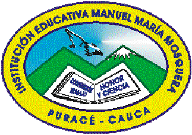

Un puente entre la sabiduría ancestral y las fronteras de la tecnología moderna.
La labor pedagógica en nuestro territorio digital se fundamenta en la proyección de la riqueza cultural hacia escenarios globales.
Nuestra misión es empoderar a la comunidad educativa, utilizando las herramientas tecnológicas como un lienzo para plasmar el legado del Resguardo de Puracé.
Descubre la historia, la cultura y los valores del Resguardo de Puracé a través de este material audiovisual.